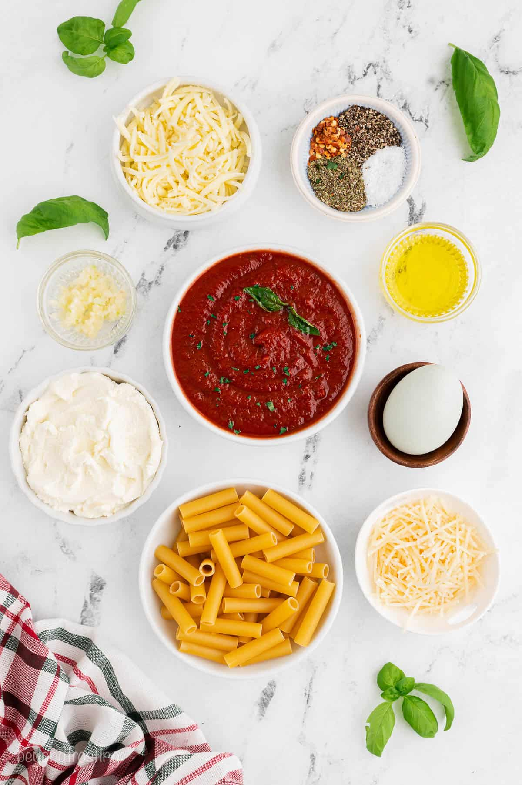

A simply delicous pasta dish that is always a hit!
A versatile meal that will still be every dinner guests favoirte, with or without meat.
Ingredients
1 pound dry ziti pasta
1 onion, chopped
1 pound lean ground beef
2 (26 ounce) jars of spaghetti sauce
6 ounces provolone cheese, sliced
1 1/2 cups of sour cream
6 ounces of mozzarella cheese, shredded
2 tablespoons of grated Parmesan cheese

Steps
Bring a large pot of lightly salted water to a boil. add ziti pasta cook about 8 minutes; drain.
As the pasta boils, brown ground beef and onion in a large skillet over medium heat; add in the sauce and simmer
for at least 15 minutes.
Preheat the oven to 350 degrees Farenheit or 175 degrees celsius. Butter a 9x13-inch baking dish.
Spread half of the ziti in the bottom of the dish; top with provolone cheese, sour cream, 1/2 the meat sauce,
remaining ziti, mozzarella cheese, and the remaining meat sauce. Top with grated parmesan cheese.
Bake in the preheated oven until heated thoroughly and cheeses have melted, about 30 minutes.